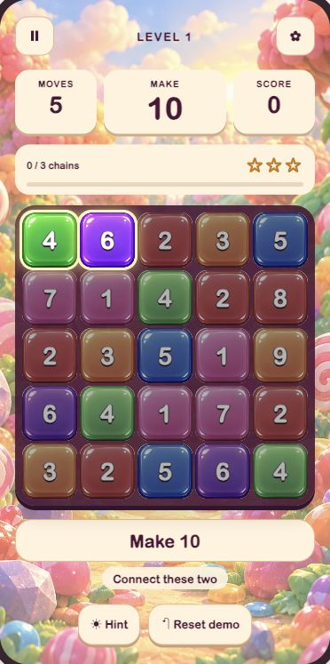
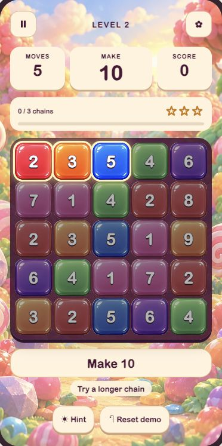
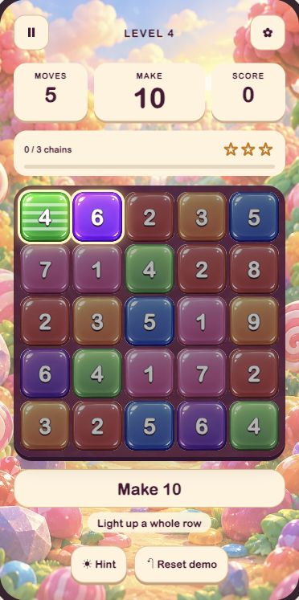
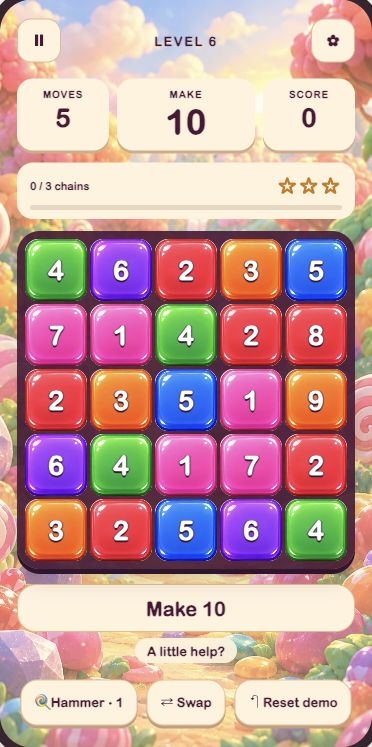
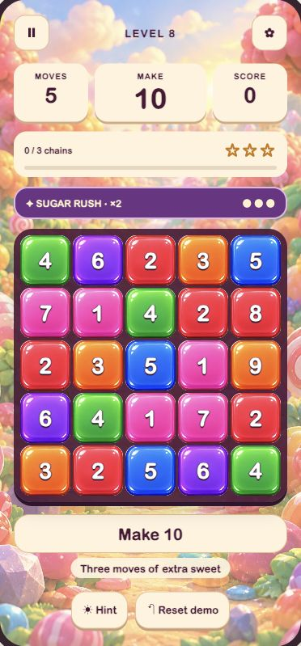
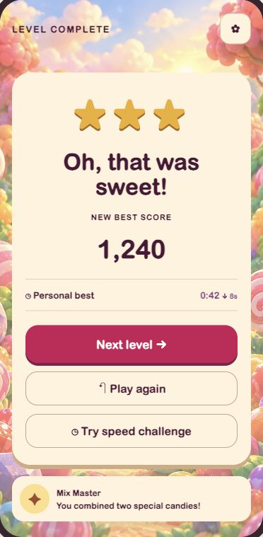
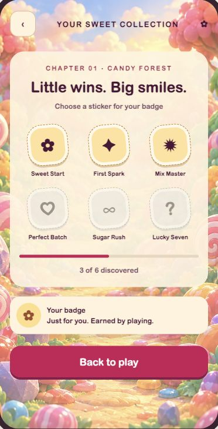

More play. Less explaining.
Math Crush · Sweet play v1 · Draft design study · Open interactive scenes →
01 · First move
02 · Longer chains
03 · First special
04 · A helping hand
05 · Sugar Rush
06 · Sweet success
07 · Sticker book